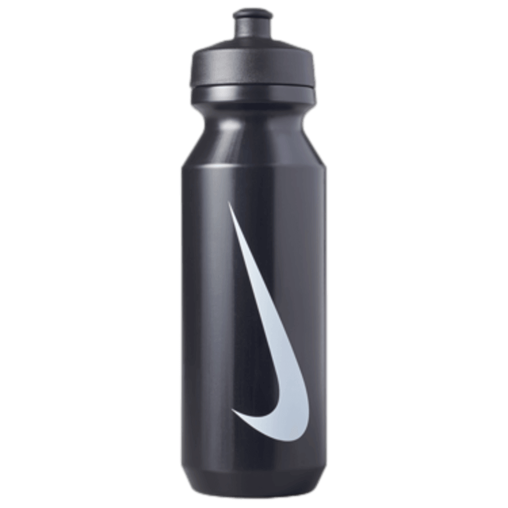

Спортивная бутылка на 946 мл, которая выдерживает твой темп — в зале, на пробежке и в дороге.

Push/pull носик открывается одним нажатием — пьёшь на бегу, наливаешь лёд и воду без брызг, легко моешь изнутри.
Гибкий сжимаемый пластик — удобно держать одной рукой во время тренировки, не выскальзывает из руки.
BPA-free пластик (LDPE/PP/силикон) — никаких посторонних запахов и вредных веществ, вода остаётся чистой на вкус.
Не нужно тереть вручную — просто отправь в посудомоечную машину и получи чистую бутылку без разводов.
Не утяжеляет рюкзак или сумку, при этом выдерживает падения и активное ежедневное использование.
Узнаваемый свуш и лаконичный чёрный цвет — выглядит стильно в зале, офисе и на улице.
| Объём | 946 мл (32 oz) |
| Материал | LDPE, полипропилен, силикон |
| Крышка | Push/pull, широкое горлышко |
| Цвет | Чёрный с белым свушем |
| Особенности | BPA-free, можно мыть в посудомойке |
| Бренд | Nike |
Беру на каждую тренировку, широкое горлышко реально спасает — лёд кидаю без проблем, а мыть в разы легче, чем узкие бутылки.
Не думала, что бутылка может быть удобной, пока не попробовала эту — мягкий корпус, не выскальзывает из рук во время бега.
Заказывал через WhatsApp, ответили быстро, привезли за 2 дня. Качество как в оригинальном магазине.
Да, бутылка оригинальная, с официальной символикой бренда.
Нажмите кнопку «Заказать в WhatsApp», напишите имя и город — мы уточним детали доставки.
Да, доставляем по всей стране, оплата возможна при получении.
Бутылка предназначена для холодных и комнатной температуры напитков — воды, изотоников, соков.
Закажите Nike Big Mouth Bottle 2.0 прямо сейчас — ответим в течение нескольких минут.
Написать в WhatsApp